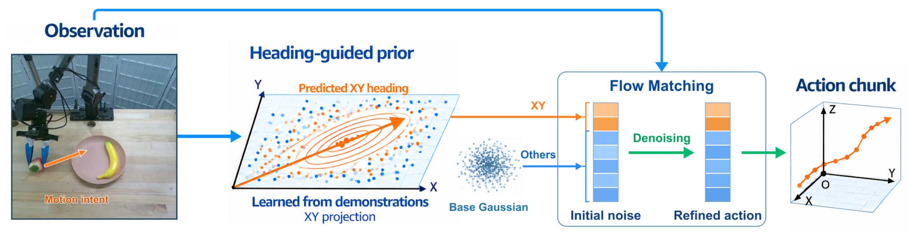
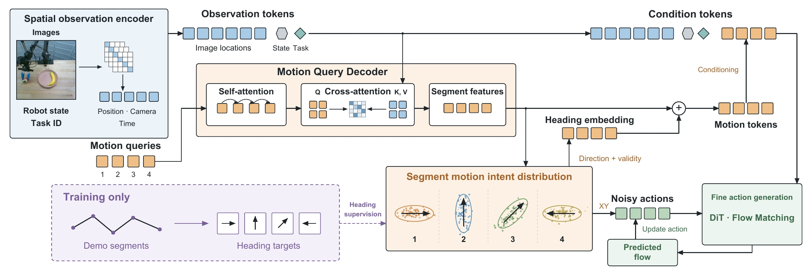
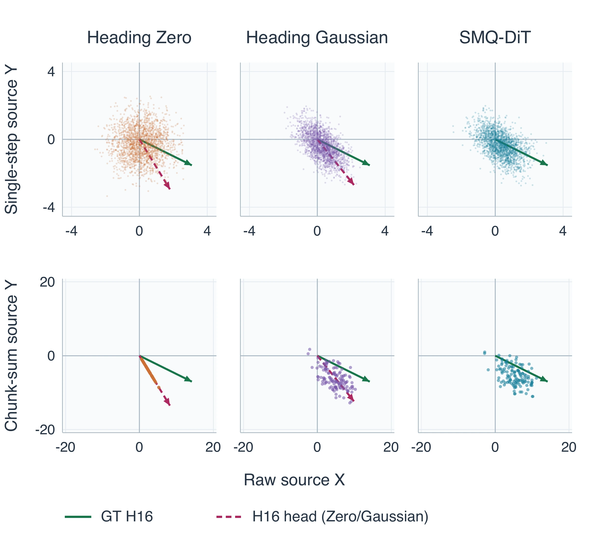
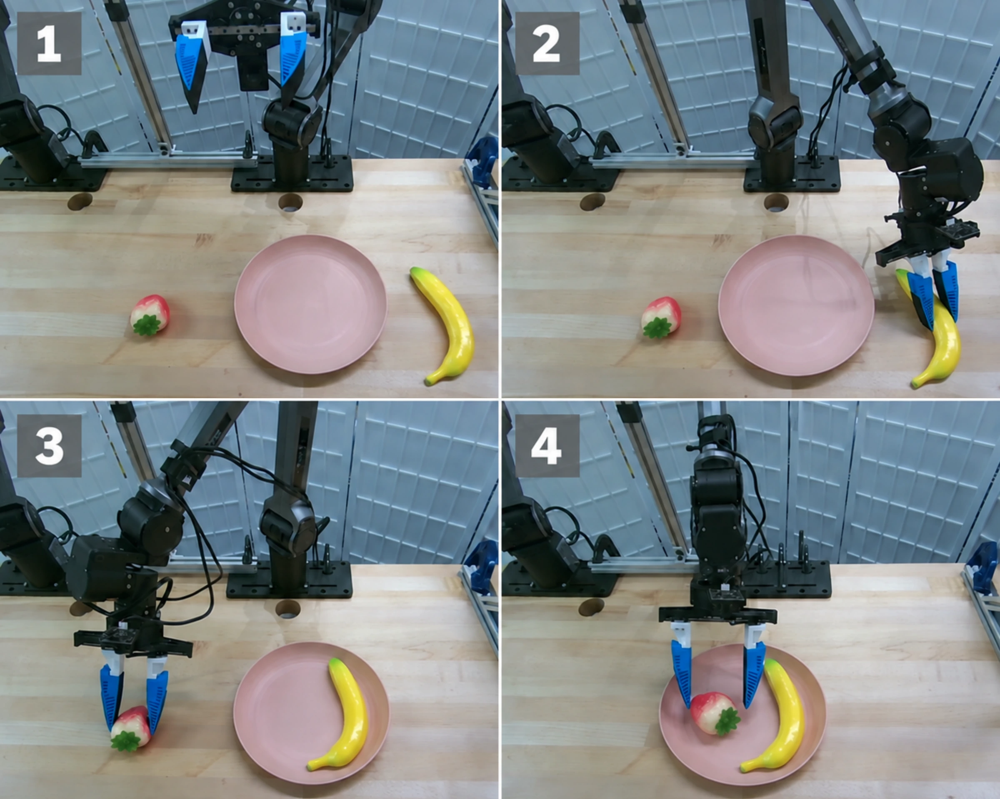
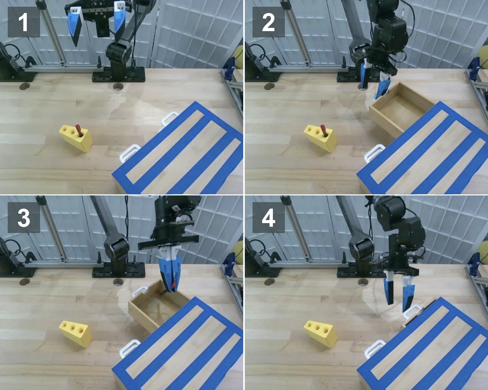

Predict motion intent
A lightweight predictor estimates a planar direction and its validity from observations. Supervision comes from the net XY translation in demonstration actions.
VISUOMOTOR POLICY LEARNING
Guiding Visuomotor Action Generation
with Predicted Motion Direction
1 Northeastern University2 Li Auto3 University of Macau
* Corresponding author

01 / THE IDEA
A robot often knows which way to move before it knows every detail of the motion.
Heading Flow makes this motion intent explicit. From visual observations, it predicts a planar heading supervised directly by demonstration actions. The same heading both conditions the action generator and shapes its initial Gaussian distribution.
This directional bias preserves the source distribution’s full support, leaving room for corrective motions. Spatial Motion Query (SMQ) extends the idea to multiple consecutive segments, capturing direction changes within an action chunk.
LIBERO-10 success rate
SMQ-DiT · 500 evaluation episodesUnder camera perturbations
Heading Flow vs. StarVLA (GR00T)Pen to Drawer success rate
SMQ-DiT · 15 of 20 real-robot trials02 / METHOD
A shared geometric cue connects what the robot sees with how action generation begins.
A lightweight predictor estimates a planar direction and its validity from observations. Supervision comes from the net XY translation in demonstration actions.
Heading Gaussian shifts the source mean and stretches its covariance along the predicted direction. Nonzero variance across directions preserves corrective alternatives.
The same heading conditions the flow model. Visual observations guide the complete action chunk, including vertical movement, orientation, and gripper commands.
A single heading can hide turns and reversals. SMQ uses learned queries to read spatial observation features and predict a heading for each consecutive segment. In our setup, four queries guide four segments of a 16-step action chunk.

Heading is a partial description of motion. Heading Zero enforces exact alignment of the sampled chunk’s net XY direction. Heading Gaussian instead biases the source while retaining lateral and backward alternatives. When a heading is predicted to be invalid, the policy falls back to the base Gaussian.

03 / EXPERIMENTS
Heading guidance is evaluated with U-Net and DiT policies, and integrated into VLA action experts.
SMQ-DiT reaches 88.6% success, an 11.0 percentage-point gain over the DiT flow-matching baseline.
Ten tasks, 50 initial states per task. Training uses 450 demonstrations and validation uses 50. Values report the best evaluated success rate using one checkpoint across all ten tasks.
With the GR00T-style expert, Heading Flow improves camera-perturbation success by 36.7 percentage points and noise-perturbation success by 25.3 points. Gains vary by perturbation suite.
| Action expert / method | Camera | Robot | Language | Light | Background | Noise | Layout | Total |
|---|---|---|---|---|---|---|---|---|
| StarVLA (PI) | 64.3 | 57.2 | 82.8 | 94.2 | 94.0 | 79.6 | 78.2 | 77.2 |
| + Heading Flow | 72.4 | 53.2 | 78.4 | 94.0 | 95.8 | 83.4 | 82.6 | 78.6 |
| + SMQ | 74.6 | 51.2 | 86.9 | 96.7 | 95.6 | 90.2 | 88.2 | 82.2 |
| StarVLA (GR00T) | 32.9 | 50.8 | 88.1 | 96.2 | 85.7 | 62.0 | 73.6 | 67.8 |
| + Heading Flow | 69.6 | 46.2 | 86.3 | 95.8 | 95.5 | 87.3 | 82.6 | 79.1 |
| + SMQ | 70.2 | 49.6 | 86.4 | 94.8 | 96.6 | 88.4 | 86.5 | 80.5 |
Bold values indicate the best result within each action-expert group. Total is the sample-weighted mean, following the StarVLA evaluation calculation. On small screens, scroll the table horizontally to view all suites.
04 / REAL-ROBOT EXPERIMENTS
A single-arm PiperX robot, wrist and side-view cameras, and delta action control at 15 Hz.

Place the banana on the right side of the plate, then the strawberry on the left. Demonstrations vary the positions of the fruit and plate.

Open the drawer, pick up the pen, place it inside, then push the drawer closed. Demonstrations include positional perturbations of the pen holder.
A trial succeeds only when the full sequence is completed in the specified order. Each policy is evaluated over 20 trials per task.
| Policy | Prepare Fruit | Pen to Drawer |
|---|---|---|
| Diffusion Policy | 40% 8/20 | 50% 10/20 |
| Heading Flow | 60% 12/20 | 70% 14/20 |
| SMQ-DiT | 70% 14/20 | 75% 15/20 |
The policy predicts a 16-step chunk and uses an eight-step execution horizon. At each transition, outgoing and incoming commands are blended over three control steps to reduce abrupt changes.
05 / CITATION
Bibliographic information for this manuscript.
@unpublished{liu2026headingflow,
title = {Heading Flow: Guiding Visuomotor Action
Generation with Predicted Motion Direction},
author = {Liu, Haotian and Li, Wei and Wen, Xin and
Ma, Yuan and Li, Xin and Jia, Peijin and
Zhu, Zhen and Li, Bailin and Zhan, Kun
and Wang, Dian},
year = {2026},
note = {Manuscript},
url = {https://seanliu7081.github.io/heading-flow/}
}